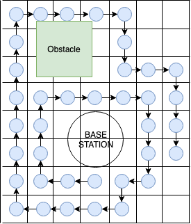

The autonomus solution to reforestating our planet
Our planet loses 18.7 million acres of forests a year. Forests are destroyed for lumber, for farm land, and by wildfires. Deforestation negatively impacts the environment, as trees pull carbon dioxide out of the air. Without forests, carbon dioxide builds up in our atmosphere which causes climate change. To reverse deforestation, we can either stop cutting down trees or we can plant more trees than we cut down. Since the former is impractical, we are taking aim at the problems with the latter.
Large scale reforestation projects are faced with the issue of planting seeds in wild areas that are not suitable for traditional farming equipment. Because of this, seed planting must be done by hand, which is expensive, labor intensive, and requires daily transportation to remote planting areas. We seek to leverage the recent advances in AI and robotic automation to reduce the cost and increase the speed of seed planting in deforested areas.
Our vision to save the planet is to construct a viable autonomous reforestation solution that relies on minimal human interaction to assist these large scale projects. The current tech-driven solutions that exist ease the reforestation efforts but still require human interaction. The goal is to demonstrate that a fully autonomous robot can be left in the wilderness to plant seeds for days on end with no human interaction or supervision required – thus pushing environmentalists to more significant roles in reforestation such as crowdfunding.
 We created FRANC to be deployed at the Younger lagoon site, a nature reserve based in Santa Cruz. The area that we are specifically planting in has a mowed flat landscape with a few ridges within the area. We expect the FRANC robot to be able to roam around without getting stuck and be able to avoid obstacles that are bigger than a 1 foot by 1 foot by 1 foot box.
We created FRANC to be deployed at the Younger lagoon site, a nature reserve based in Santa Cruz. The area that we are specifically planting in has a mowed flat landscape with a few ridges within the area. We expect the FRANC robot to be able to roam around without getting stuck and be able to avoid obstacles that are bigger than a 1 foot by 1 foot by 1 foot box.
The bot operates in a 24-hour cycle roaming the terrain and continuously drop seeds as it moves from waypoint to waypoint. The navigation stack repeats itself as long as there is unplanted sites within the radius of the station. When the bot runs low on battery or seeds, it can return to the base station to refill its resources.The base station has a solar panel and will be used to charge its battery and the bot’s battery, as well as a silo of seeds to refill the bot’s seeds. The charging will be done via a contactless induction charging system. The station requires a battery in order to store charge from the solar panel and to charge the bot which is charged via a wireless inductive charger. When the bot is done charging it moves to another spot at the base station where it will get filled with seeds.

FRANC operates round the clock upon deployment. FRANC starts off at the base station with a full battery and full hopper in the Move To Next Plant Site state, see the bottom left figure for an illustration of the planting state machine. In this state, it checks its seed map, a 2D array of pose coordinates to plant in relative to the base station (i.e. pose (10,-9) is 10 feet to the east and 9 feet south of the station). Once the site is reached, the robot marks the spot as planted. If the site is unreachable, it marks it as such and moves on to the next site. It’s important to note that the robot continuously dispenses seed leaving a trail everywhere it goes, refer to the right figure for an illustration of the robot planting path. When the robot runs out of charge or seed, it returns to the station to fill up before returning to plant. It does this until all places on the seed map are marked as planted or unreachable.
If the robot encounters an error or situation it can’t handle, the robot will either attempt to bring itself back to a nominal state or it will beacon for help. The error state machine, see the bottom right figure, runs on a single node in parallel with the planting state machine running on a separate node. Refer to figure 1.4 for the list of potential errors the robot can account for and the conditions for each error.
The software system operates on two microcontrollers and one Single Board Computer: the robot’s programmable system-on-chip (PSoC), the station’s PSoC, and the Raspberry Pi. The Raspberry Pi is the main processing unit, handling the state machine within the robotics software called ROS. The PSoC is in charge of processing the data from the Ping Sensors and Encoders before sending that data to the Raspberry Pi, where it is posted to ROS. The Raspberry Pi receives the sensorsory data (IMU, GPS, LiDAR, and Kinect) directly via serial and USB connections. The main driving motors of the robot are controlled via a PWM signal from the Pi. The base station is controlled by a PSoC, which handles enabling charging and seed dispensing. The communication between the Raspberry Pi and the station PSoC is done via an RF signal module. Figure 1.5 showcases these data transfers between the microcontrollers, sensors, and station.